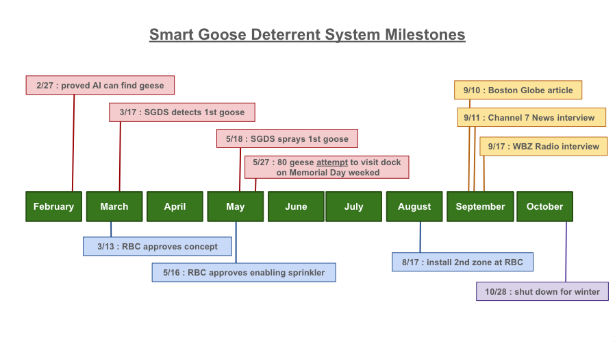
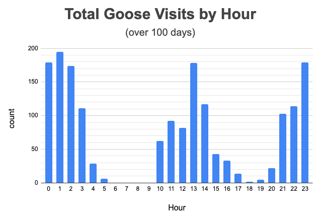
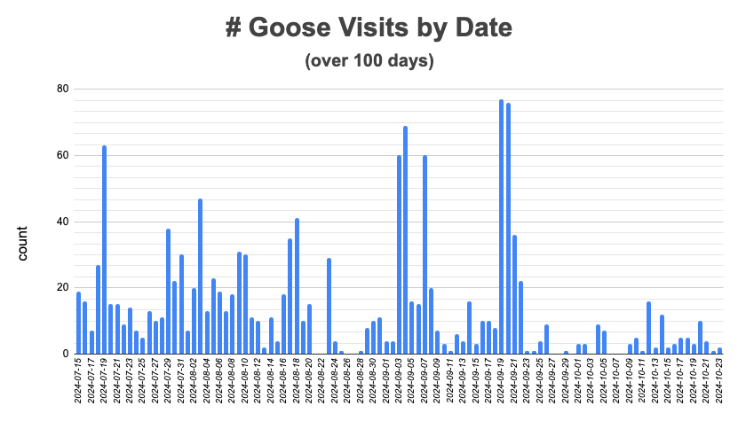

Smart Goose Deterrent System
Smart Goose Deterrent System
written: November 18, 2024
Now that the rowing season is coming to an end, let's reflect back on the progress we made with the Smart Goose Deterrent System in 2024.
We appreciate working with the Riverside Boat Club in Cambridge, MA. They provided an ideal environment for testing: lots of geese, rowers, cooperation, and feedback.
SGDS started as an idea in February, and quickly evolved into a system that worked remarkably well.

All along the way, we examined every frame of data collected by SGDS, to make sure it was behaving as desired. We found out that we needed to teach the AI how to deal with some interesting situations:
We learned that geese are very persistent. They constantly tested the boundaries of the SGDS sprinklers. They learned exactly where they could hang out and be safe. On some mornings, you could see what looked like a hundred geese swimming by the dock, just out of range of sprinklers.
We tallied data from the 2nd half of the season. Geese visited at all hours of the day, mostly when people were not on the dock. Most RBC rowers launch in the morning and evening.

In the 2nd half of the season, SGDS found geese over 1400 times (77 times on the busiest day).

If you believe a goose produces 1 pound of poop per day, hangs out for 4 hours when it visits the dock, and travels in groups of 4 or more: we estimate that we kept 2000 pounds of poop off the dock in 2024!
On these cold November mornings, SGDS is shut down. Sadly, the geese are back, and they are making a mess of RBC's dock. The cold weather rowers have had to learn to sweep poop again (and they might not be as quick to learn as the geese). We are happy knowing SGDS made a difference for RBC this season and look forward to doing battle again next year.